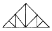
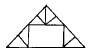
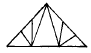
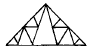
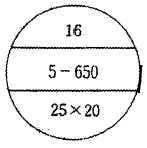
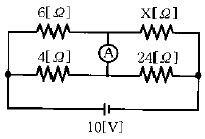
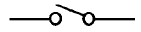
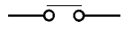
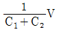
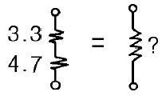

건축설비기사 (2004-03-07 기출문제)
1과목: 건축일반
1. 골구조의 리벳접합에서 각 게이지라인 간의 거리 또는 게이지라인과 재면과의 거리를 무엇이라 하는가?
- 게이지(gauge)
- 피치(pitch)
- 클리어런스(clearance)
- 그립(grip)
(정답률: 40%)

2. 사무소건물에서의 엘리베이터 계획에 대한 설명 중 옳은 것은?
- 대수산정은 출근시 10분간의 이용인원수를 기준으로 한다.
- 배치는 특별한 사정이 없는 한 1개소에 집중 설치한다.
- 평균운전간격, 즉 평균대기시간은 60초 이하가 이상적이다.
- 엘리베이터를 직렬로 배치할 경우 8대 정도를 한도로하며, 8대 이상일 경우 알코브형 배치를 고려한다.
(정답률: 알수없음)
3. 공동주택의 장점에 대한 설명으로 옳지 않은 것은?
- 도시생활의 커뮤니티화가 가능하다.
- 한 단지에 다수의 주택을 계획하여 건설함으로써 1호당 건설비를 줄일 수 있다.
- 생활의 변화에 대해 자유롭게 대응할 수 있다.
- 상업적, 문화적 공동시설을 만들어 생활 협동체로서 주거환경의 질을 높일 수 있다.
(정답률: 82%)
4. 병원 병동부의 구성요소에 속하지 않는 것은?
- 수술실
- 간호사 대기소
- 방문객 대기실
- 병실
(정답률: 알수없음)
5. 상점의 쇼윈도에 대한 설명 중 옳지 않은 것은?
- 쇼윈도의 바닥높이는 귀금속점의 경우는 낮을수록, 운동용품점의 경우는 높을수록 좋다.
- 국부조명은 배열을 바꾸는 경우를 고려하여 자유롭게 수량, 방향, 위치를 변경할 수 있도록 한다.
- 유리면의 반사방지를 위해 쇼윈도 안의 조도를 외부보다 밝게 한다.
- 쇼윈도 내부의 조명에 주광색의 전구를 필요로 하는 상점은 의료품점, 약국 등이다.
(정답률: 70%)
6. 두께 15cm 콘크리트 벽체에 있어서 내벽 표면 온도 20℃, 외벽 표면 온도 5℃일 때 벽체를 통과하는 열량은? (콘크리트의 열전도율: 1.56kcal/mh℃)
- 120 kcal/m2h
- 156 kcal/m2h
- 225 kcal/m2h
- 300 kcal/m2h
(정답률: 58%)
7. 한식주택과 양식주택에 대한 설명으로 옳지 않은 것은?
- 한식주택은 은페적이나 양식주택은 개방형이다.
- 한식주택은 혼용도이며, 양식주택은 단일용도이다.
- 한식주택은 실의 분화로 되어 있으며 양식주택은 실의 조합으로 되어 있다.
- 한식주택의 가구는 부차적 존재이며, 양식주택의 가구는 주요한 내용물이다.
(정답률: 100%)
8. 호텔계획에 관한 설명 중 옳은 것은?
- 레지덴셜호텔은 호텔과 아파트의 중간 형태로서 각객실에는 주방설비를 갖추고 있다.
- 클럽하우스는 교통기관의 발착지점에 위치한 호텔이다.
- 연면적에 대한 숙박관계부분의 비율은 커머셜호텔이레지덴셜호텔보다 높다.
- 리조트호텔은 도시건축으로서 개방성이 충분하여야 하며 대부분 고밀도 고층형의 모습을 보인다.
(정답률: 알수없음)
9. 유리블록의 사용시 효과에 해당되지 않는 것은?
- 단일창에 비해 열손실은 크지만 충분한 주광(晝光)을 받을 수 있다.
- 유리블록 표면을 분광처리함으로써 실내로 입사하는 빛의 방향을 조절할 수 있다.
- 확산표면으로 처리된 유리블록이나 다른 내용물을 사용하면 현휘를 감소시킬 수 있다.
- 확산유리블록은 실내의 조명수준을 증대시킨다.
(정답률: 69%)
10. 오피스 랜드스케이핑(office landscaping)의 특성에 대한 설명으로 옳지 않은 것은?
- 작업흐름의 실제적 패턴에 기초를 둔다.
- 작업집단을 자유롭게 그루핑하여 규칙적인 평면을 유도한다.
- 실내에 고정 및 반고정된 칸막이를 사용하지 않는다.
- 청각적인 문제에 특별한 대책을 필요로 한다.
(정답률: 알수없음)
11. ℓ x, ℓ y의 크기가 아래와 같은 각 슬래브 중 1방향 슬래브는 어느 것인가? (단, ℓx = 단변순스팬, ℓy = 장변순스팬, 단위 m)
- ℓ x = 4, ℓ y = 8
- ℓ x = 4, ℓ y = 9
- ℓ x = 4, ℓ y = 6
- ℓ x = 4, ℓ y = 7
(정답률: 알수없음)
12. 목재 지붕틀을 구성하는 부재가 아닌 것은?
- 처마도리
- 깔도리
- 평보
- 토대
(정답률: 알수없음)
13. 물체의 상태가 고체에서 액체로 또는 액체에서 기체로 변화할 때 온도의 변화없이 흡수되는 일정한 양의 열은?
- 복사열
- 비열
- 잠열
- 현열
(정답률: 72%)
14. 양식 지붕틀 중 쌍대공 지붕틀(queen post truss)은 어느 것인가?




(정답률: 알수없음)
15. 다음중 음의 단위와 관계가 없는 것은?
- lux
- ㏈
- W/cm2
- phon
(정답률: 73%)
16. 철물과 사용장소가 잘못 짝지어진 것은?
- 메탈라스 - 벽
- 논슬립 - 천장
- 코너비드 - 기둥
- 정첩 - 창호
(정답률: 알수없음)
17. 벽돌 내쌓기의 내미는 정도는 얼마를 한도로 하는가?
- 1/2B
- 1B
- 2B
- 4B
(정답률: 알수없음)
18. 조적조 구조에서 벽량(壁量)에 대한 설명으로 가장 알맞은 것은?
- 내력벽 길이의 총합계를 그 층의 건물면적으로 나눈 값
- 내력벽 무게의 총합계를 그 층의 벽돌벽면적으로 나눈 값
- 내력벽 길이의 총 합계를 그 층의 벽돌벽면적으로 나눈 값
- 내력벽 무게의 총 합계를 그 층의 건물면적으로 나눈값
(정답률: 42%)
19. 부동침하의 원인이라고 볼 수 없는 것은?
- 건물이 이질 지층에 걸려 있을 경우
- 지반이 메운 땅일 경우
- 각 독립기초판의 지내력의 여유의 차가 작은 경우
- 일부 지정을 하였을 경우
(정답률: 42%)
20. 도서관의 서고 계획에 대한 기술 중 옳지 않은 것은?
- 통로를 충분히 조명하고 또한 눈이 부시지 않도록 한다.
- 서고의 위치는 도서를 가능한 신속하게 이용자에게 전달해 줄 수 있는 곳을 선택한다.
- 서고와 다른 공간과의 관계는 장래의 확장이나 상호 전환이 가능하도록 구성한다.
- 서고의 수장능력 기준은 능률적인 작업용량으로서 서고공간 1m3당 약 150권 정도로 산정한다.
(정답률: 알수없음)
2과목: 위생설비
21. 같은 구경의 강관을 직선으로 연결하고자 할 때 사용되는 강관 이음쇠류가 아닌 것은?
- 부싱
- 소켓
- 유니온
- 니플
(정답률: 알수없음)
22. 건물의 면적에 의해 급수량을 산정하기 위해 꼭 알아야 할 것은?
- 건물의 건폐율
- 건물의 연면적에 대한 유효면적의 비율
- 건물의 대지면적에 대한 연면적의 비율
- 건물의 대지면적에 대한 건축면적의 비율
(정답률: 알수없음)
23. 배수배관에 원칙적으로 청소구를 설치해야 하는 위치가 아닌 것은?
- 건물의 옥내 배수관과 부지 하수관이 접속되는 곳
- 배수 수직관의 최하단부
- 배수 수평관에서 관경이 100A이상일 때에 직진거리 15m이내마다 1개소씩 설치
- 배관이 45°이상의 각도로 구부러진 곳
(정답률: 알수없음)
24. 고가탱크로 매시간 24m3를 양수할 경우 알맞은 펌프의 구경은? (단, 유속은 1.5m/sec)
- 75.4 mm
- 61.1 mm
- 58.3 mm
- 39.1 mm
(정답률: 알수없음)
25. 양정 H=20m, 양수량 Q=3m3/min이고 축마력을 15PS를 필요로 하는 윈심 펌프의 효율은 약 얼마인가?
- 72%
- 78%
- 80%
- 89%
(정답률: 28%)
26. 급탕방식 중 기수혼합식의 설명으로 옳지 않은 것은?
- 증기가 물에 주는 열효율이 60% 정도로 좋지 않다.
- 증기의 공급시설이 되어 있는 공장, 선박, 학교 등에서 사용된다.
- 1∼4 ㎏/cm2의 높은 증기압이 필요하다.
- 소음을 줄이기 위해 사이렌서를 사용한다.
(정답률: 30%)
27. 급탕설비 배관에서 역환수(reverse return)배관을 채택하는 주된 이유는?
- 수격작용 방지
- 유량의 균등분배
- 마찰손실 감소
- 배관의 부식방지
(정답률: 64%)
28. 다음 설명 중에서 맞는 것은?
- 배수트랩은 배수관내의 흐름을 원활하게 하기 위한것으로 관트랩, 드럼트랩, 벨트랩 등이 있다.
- 비열 0.4kcal/kg· ℃인 물질 1,000kg을 25℃에서 50℃까지 올리는데 필요한 열량은 20,000 kcal이다
- 수질오염의 지표로 사용되고 있는 물의 경도는 물속에 녹아있는 탄산칼슘의 100만분률(ppm)로 표시한다.
- 보일러에 연수를 사용시 보일러 내면에 스케일이 생겨 전열효율이 저하되며 과열과 수명단축의 원인이 된다.
(정답률: 44%)
29. 다음 중 기구배수부하단위수가 가장 큰 기구는?
- 세정밸브식 대변기
- 스톨형 소변기
- 청소싱크
- 세탁싱크
(정답률: 60%)
30. 압력 배관용 탄소강관의 호칭은 관의 바깥 지름과 스케줄번호로 나타낸다. 이때 스케줄 번호와 관련된 항목으로 가장 밀접한 것은 다음 중 어느 것인가?
- 관의 형상
- 관의 이음
- 관의 두께
- 관의 내경
(정답률: 55%)
31. 옥외소화전설비의 설치기준으로 틀린 것은?
- 옥외소화전설비의 방수용 기구를 수납하는 함은 옥외 소화전으로부터 보행거리 5m 이내에 설치해야 한다.
- 노즐 선단의 방수량은 350ℓ /min 이상이어야 한다.
- 수원의 수량은 소화전의 설치개수(2개 이상일 때에는 최대 2개)에 7m3을 곱한 양 이상이 되어야 한다.
- 옥외소화전은 소방대상물의 각 부분으로부터 1개의 호스접속구까지의 수평거리가 최대 30m 이하가 되도록 설치하여야 한다.
(정답률: 50%)
32. 유량선도(관마찰저항선도)를 이용하여 관경을 구하려고 한다. 이음류를 포함한 손실을 구하기 위해서 무엇을 이용하여야 하는가?
- 마찰상당관길이표
- 관균등표
- 동시사용유량표
- Darcy 방정식
(정답률: 50%)
33. 액화천연가스(ＬＮＧ)의 유량을 나타내는 단위는?
- ℓ /h
- ㎏/h
- m3/h
- cm3/h
(정답률: 47%)
34. 고가수조 방식의 급수법에서 F.V식 대변기를 최고층에서 사용할 경우 대변기에서 고가수조의 최저수면까지의 최소 높이는 얼마 이상으로 하여야 하는가? (고가탱크에서 대변기까지의 마찰저항: 0.1㎏/cm2)
- 8 m
- 12 m
- 14 m
- 16 m
(정답률: 55%)
35. 급탕설비의 온수순환에 관한 설명으로 옳은 것은?
- 순환펌프에 의한 강제순환은 물의 밀도차에 따른 순환이다.
- 중력순환수두는 순환높이에 비례하고, 공급관과 반탕관에서의 물의 비중량 차이에 반비례한다.
- 강제순환수두는 배관의 길이와 마찰손실수두에 반비례한다.
- 배관의 마찰손실수두가 자연순환수두보다 커지면 자연순환이 안된다.
(정답률: 64%)
36. 부패탱크방식 오수정화조에 대한 설명으로 옳은 것은?
- 부패조에는 공기를 충분히 공급한다.
- 산화조에는 공기의 공급을 차단시킨다.
- 산화조에서는 혐기성균에 의해 산화시킨다.
- 여과조에서는 쇄석을 이용하여 고형물을 제거한다.
(정답률: 36%)
37. 급수설비에 관한 기술 중 틀린 것은?
- 수수조 등의 기기가 있는 경우에는 급수량의 산정법으로 통상 인원에 의한 방법이 사용된다.
- 음료수 계통에는 규정 잔류염소를 함유한 물이 공급된다.
- 아파트에 있어서 1인당 1일 평균사용수량은 160ℓ ~250ℓ정도이다.
- 급수배관계통에서 강관과 동관을 직접 접속할 경우 동관의 부식이 촉진된다.
(정답률: 80%)
38. 연결송수관 설비에 관한 설명 중 옳지 않는 것은?
- 송수구의 위치는 소방펌프 자동차가 용이하게 접근할수 있는 곳으로 한다.
- 방수구의 설치 높이는 바닥면에서 0.5m 이상 1m 이하로 한다.
- 방수구 연결구의 구경은 50mm로 한다.
- 연결송수관 전체를 사이어미즈 커넥션 또는 소방대전용전이라고 한다.
(정답률: 80%)
39. 배수, 통기 배관시공에 관한 내용이다. 잘못된 것은?
- 기구 배수관의 곡부에 다른 배수지관을 접속해서는 안된다.
- 드럼트랩 등의 트랩 청소구를 열었을 때 하수 가스가 누설되지 않는 배관으로 한다.
- 통기관을 수평으로 설치하는 경우는 오퍼플로선보다 100mm 이상 수직으로 내려 행한다.
- 간접 배수계통의 통기관은 일반 통기계통에 접속시키지 않고 대기 중에 개구한다.
(정답률: 34%)
40. 다음 중 통기관의 관경을 결정하는 방법을 설명한 것 중 틀린 것은?
- 각개통기관의 관경은 접속하는 배수관 관경의 1/2이상으로 하고, 최소 관경을 32mm로 한다.
- 루프통기관의 관경은 접속하는 배수수평지관과 통기수직관의 관경의 작은 쪽의 1/2이상을 원칙으로 한다.
- 결합통기관의 관경은 통기수직관과 배수수직관 중에서 큰 쪽의 관경 이상으로 한다.
- 신정통기관의 관경은 배수 수직관의 관경과 동일 지름으로 한다.
(정답률: 알수없음)
3과목: 공기조화설비
41. 서울지방의 냉방설계 외기온도가 위험율 2.5%일 때 33.5℃이다. 다음중 바르게 설명한 것은 어느 것인가?
- 외기온도가 33.5℃보다 낮을 확률이 냉방기간의 2.5%에 해당한다.
- 외기온도가 33.5℃와 같을 확률이 냉방기간의 2.5%에 해당한다.
- 외기온도가 33.5℃보다 높을 확률이 냉방기간의 2.5%에 해당한다.
- 외기온도가 33.5℃보다 높을 확률이 냉방기간의 97.5%에 해당한다.
(정답률: 70%)
42. 소음이 적기 때문에 취출풍속을 5m/s 이상으로 사용하며, 소음규제가 심한 방송국 스튜디오나 음악감상실 등에 사용되는 취출구는?
- 노즐형
- 라인형
- 슬롯형
- 펑커루버
(정답률: 80%)
43. 실의 크기가 7m×8m×3m인 회의실에 84명이 있다. 1인당 수증기 발생량이 50g/h이고 실내의 절대습도 xi= 0.0081kg/kg, 외기의 절대습도 xo= 0.0046kg/kg일 때 환기회수를 구하라.
- 3 [회/h]
- 4 [회/h]
- 5 [회/h]
- 6 [회/h]
(정답률: 50%)
44. 고온수 난방의 배관에 관한 설명으로 옳은 것은?
- 고온수로 실내에 직접공급하는 것이 일반적이다.
- 대량의 열량공급은 용이하지만 배관의 지름은 저온수난방보다 크게된다.
- 관내압력이 높기 때문에 관 내면의 부식문제가 증기난방에 비해 심하다.
- 가압장치로는 질소가스가압, 증기가압등의 방식이 이용된다.
(정답률: 42%)
45. 인체의 온냉감을 결정하는 요인 중 일반의 공조설비로 조정되지 않는 것은?
- 온도
- 습도
- 기류
- 복사열
(정답률: 60%)
46. 공기확산 성능계수(ADPI)와 관계가 가장 먼 것은?
- 유효드래프트 온도
- 공기분포에 대한 쾌적 비율
- 실내기류속도
- 부유분진량
(정답률: 30%)
47. 가변풍량방식에서 VAV유니트의 개폐작동은 다음중 무엇에 의하여 이루어 지는가?
- CO2센서
- 상대습도
- 실내온도
- 실내압력검출기
(정답률: 75%)
48. 단일덕트정풍량방식에 관한 설명이다. 적당한 것은?
- 고속덕트방식을 주로 사용한다.
- 부하특성이 다른 다수의 실의 공조에 적합하다.
- 환기효과가 적다.
- 중간기에 외기냉방이 가능하다.
(정답률: 알수없음)
49. 중앙 공조기 방식에서 외기측에 설치되는 기기는?
- 방진기
- 가습기
- 송풍기
- 공기 예열기
(정답률: 50%)
50. 외주부(perimeter zone)의 부하변동에 가장 효과적으로 대응할 수 있는 공기조화 방식은?
- 팬코일 유닛방식
- 단일덕트방식
- 각층 유닛방식
- 멀티죤 유닛방식
(정답률: 알수없음)
51. 송풍기의 크기를 나타내는 송풍기 번호는 어떻게 계산되는 것인가? (단, 원심 송풍기의 경우)
- NO =임펠러 직경/100(㎜)
- NO =임펠러 직경/120(㎜)
- NO =임펠러 직경/150(㎜)
- NO =임펠러 직경/180(㎜)
(정답률: 알수없음)
52. 공조용 코일 설계시에 고려하여야 할 사항 중 틀린 것은?
- 냉수코일의 정면풍속은 2.5㎧가 바람직하다.
- 코일내의 물의 속도는 1.0㎧ 전후가 좋다.
- 공기와 냉.온수의 흐름방향은 평행류로 하는 것이 전열효과가 크다.
- 코일의 열수가 증가하면 바이패스 팩터는 감소한다.
(정답률: 알수없음)
53. 다음 그림의 방열기 호칭으로 올바르게 표현한 것은?

- 5주형, 650mm높이, 16쪽수, 연결관경 25mm× 20mm
- 5세주형, 650mm폭, 16쪽수, 연결관경 25mm× 20mm
- 5주형, 650mm폭, 16쪽수, 연결관경 25mm× 20mm
- 5세주형, 650mm높이, 16쪽수, 연결관경 25mm× 20mm
(정답률: 40%)
54. 증기가 응축할 때 온도가 높은 응축수의 압력이 낮아지면 다시 증발하게 된다. 이때 증발로 인하여 생기는 부피의 증가를 밸브의 개폐에 이용하는 것으로, 취급되는 응축수의 양에 비하여 극히 소형이며 고압· 중압· 저압의 어느곳에나 사용된다. 그러나 작동 및 구조상 증기가 약간 누설되는 결점이 있다. 위에 설명한 증기트랩은?
- 열동식 트랩
- 버킷 트랩
- 플로트 트랩
- 충격식 트랩
(정답률: 29%)
55. 건물의 지상높이가 100m라 할때 1층 출입구에서의 연돌 효과에 의한 작용압은 얼마인가? (단, 중성대는 건물높이의 중앙부분에 위치하고,실내와 외기공기의 비중량은 각각 1.16㎏/m3와 1.32㎏/m3이다.)
- 8㎜Aq
- 10㎜Aq
- 12㎜Aq
- 16㎜Aq
(정답률: 19%)
56. 어떤 가습장치에서 100℃ 포화증기로 가습을 하고 있다. 이때의 열수분비는 얼마인가? (단, 0℃ 물의 증발잠열 = 597.5㎉/㎏,수증기의 정압비열= 0.441㎉/㎏℃)
- 597.5㎉/㎏
- 641.6㎉/㎏
- 685.7㎉/㎏
- 730.7㎉/㎏
(정답률: 알수없음)
57. 다음 중 남측 유리창을 통한 일사량이 가장 많은 때는?
- 5월
- 7월
- 9월
- 12월
(정답률: 알수없음)
58. 개방식 배관의 펌프 흡입관 선단에 부착하여 펌프 운전중에는 물론 펌프 정지 시에도 흡입관속을 만수상태로 만들도록 고려된 배관재료는?
- 관트랩
- 스트레이너
- 박스트랩
- 풋형 체크 밸브
(정답률: 50%)
59. 다음은 국소환기 설계에서 주의해야 할 사항에 대한 설명이다. 옳지않은 것은?
- 배기장치는 배기가스에 의해 부식하기 쉬우므로 그에 상응한 재료를 사용한다.
- 국소환기의 계통은 공간의 절약을 위해 공조장치의 환기덕트와 연결한다.
- 배풍기는 배기계통의 말단부에 두어 압력이 부(-)로 되도록 해서 다른 쪽으로의 누출을 방지한다.
- 배출된 오염물질이 대기오염이 되지 않도록 정화장치를 부착한다.
(정답률: 알수없음)
60. 냉각탑이 응축기보다 낮은 위치에 설치하는 경우 냉각수 펌프가 정지할 때마다 응축기 주변이 부압(負壓)이 되지 않도록 설치하는 것은?
- 사이폰브레이커(syphon breaker)
- 디이프튜브(deep tube)
- 더어트포켓(dirt pocket)
- 플래시탱크(flash tank)
(정답률: 알수없음)
4과목: 소방 및 전기설비
61. 형광등의 특성이 아닌 것은?
- 백열전구에 비해 수명이 길고, 효율이 높다.
- 램프의 휘도가 크다.
- 백열전구에 비해 열을 적게 발산한다.
- 전원 전압의 변동에 대하여 광속 변동이 적다.
(정답률: 알수없음)
62. 진상용 콘덴서의 사용목적은?
- 역률개선
- 전기충전
- 과전류차단
- 영상전류검출
(정답률: 100%)
63. 저항 20[Ω]의 전열기에 220[V]의 전압을 60[sec]동안 가했을 때 발생하는 열량 H[kcal]는 얼마인가?
- 145.2[kcal]
- 264.0[kcal]
- 34.848[kcal]
- 63.36[kcal]
(정답률: 알수없음)
64. 일반건축물의 피뢰침 보호각은 최대 얼마인가?
- 30°
- 45°
- 60°
- 70°
(정답률: 알수없음)
65. 220V, 100W 백열전구의 광속이 1570 lm이라면, 백열전구의 효율은 약 몇 [lm/W] 인가?
- 7.14
- 15.7
- 22.0
- 34.5
(정답률: 19%)
66. 그림과 같은 회로에서 전류계에 흐르는 전류가 0일 때 저항 X[Ω]는?

- 20
- 36
- 42
- 49
(정답률: 알수없음)
67. HIV전선이라고도 불리우는 것으로 내열성이 요구되는 옥내 배선에 사용되는 절연전선은?
- 600V 비닐절연전선
- 600V 2종비닐절연전선
- 600V 고무절연전선
- 인입용비닐절연전선
(정답률: 알수없음)
68. 어떤 전열기에서 10분 동안에 600,000[J]의 일을 했다고 한다. 이 전열기에서 소비한 전력은 몇 [W]인가?
- 500
- 1,000
- 1,500
- 3,000
(정답률: 73%)
69. 전기량의 단위는?
- [V]
- [A]
- [C]
- [Ω]
(정답률: 55%)
70. 조작스위치 잔류접점을 나타내는 기호는?


(정답률: 알수없음)
71. 정전용량이 C1, C2인 두 콘덴서를 직렬로 연결한 회로에 전압 V를 인가할 경우 C1에 걸리는 전압은?
- (C1+C2)V

- C1V/C1+C2
- C2V/C1+C2
(정답률: 알수없음)
72. 아크와 직각 방향으로 자계를 주어서 발생되는 아크를 소호실 안으로 끌어 넣어 차단하는 구조로 된 차단기는?
- OCB
- MBB
- ABB
- VCB
(정답률: 알수없음)
73. 3상 유도 전동기의 회전방향을 바꿀 수 있는 방법은?
- Y결선에서 △결선으로 전환한다
- Y결선회로의 역회로를 결선한다
- 상전압보다 선간전압을 크게한다
- 3상 중에서 2개의 상을 변환접속한다
(정답률: 알수없음)
74. 다음 회로와 같이 3.3[kΩ]과 4.7[kΩ]저항을 직렬로 연결할때 합성저항은 얼마인가?

- 2[Ω]
- 2[kΩ]
- 8[Ω]
- 8[kΩ]
(정답률: 알수없음)
75. 변압기의 명판에서 정격 1차 전압이란 무엇인가?
- 무부하일 때의 1차 전압
- 부하를 걸었을 때의 1차 전압
- 정격 2차 전압에 권수비를 곱한 전압
- 정격 2차 전압에 전압을 곱한 값
(정답률: 34%)
76. 다음 중 에스컬레이터의 정격속도로 가장 적당한 것은?
- 30 m/min
- 35 m/min
- 40 m/min
- 45 m/min
(정답률: 47%)
77. 다음 설명 중 틀린 것은?
- 오옴의 법칙은 전압은 저항에 반비례함을 의미한다.
- 온도의 상승에 따라 도체의 전기저항은 증가한다.
- 도선의 저항은 길이에 비례하고 단면적에 반비례한다
- 전류가 누설되지 않도록 하는 것을 절연이라고 하며 그 재료를 절연물이라고 한다.
(정답률: 알수없음)
78. 제어요소는 무엇으로 구성하는가?
- 비교부와 조작부
- 비교부와 검출부
- 조절부와 조작부
- 검출부와 조작부
(정답률: 93%)
79. 논리식 A· (A+B)를 간단히 하면 무엇인가?
- A+B
- A· B
- B
- A
(정답률: 알수없음)
80. 미리 정해진 순서에 따라 제어의 각 단계를 순차적으로 행하는 것으로 공기조화기의 경보 또는 팬의 기동/정지에 적합한 제어방식은?
- 시퀀스 제어
- 피드백 제어
- 프로세스 제어
- 정치 제어
(정답률: 55%)
5과목: 건축설비관계법규
81. 축물의 건축허가신청에 필요한 기본설계도서에 반드시 표시하여야 할 사항 중 거리가 먼 것은?
- 지역· 지구 및 도시계획사항
- 건축물의 용도별 면적
- 주차장규모
- 에너지절약계획서
(정답률: 알수없음)
82. 건축법상 관계전문기술자의 협력 범위가 아닌 것은?
- 다중이용건축물의 구조계산에 의한 구조안전확인
- 깊이 10미터인 토지굴착공사
- 연면적이 1만제곱미터인 중앙집중식난방의 아파트 건축설비의 설계
- 연면적이 3만제곱미터인 창고시설의 건축설비 설계
(정답률: 알수없음)
83. 공중화장실의 설치기준에 관한 기술 중 옳지 않은 것은?
- 출입구는 남자용과 여자용이 구분되도록 따로 설치 할 것
- 공중이 이용하기 편리한 장소에 설치할 것
- 대변기는 남자용 5개, 여자용 8개 이상 설치할 것
- 대변기의 칸막이 규격은 짧은 변이 85센티미터 이상, 긴 변이 115센티미터 이상(양변기가 아닌경우)일 것
(정답률: 알수없음)
84. 스프링클러를 설치하여야 할 소방대상물로서 옳지 않은 것은?
- 판매시설로서 층수가 4층이상인 건축물에 있어서 바닥면적의 합계가 5,000m2 이상인 것은 전층에 설치하 여야 한다.
- 층수가 11층 이상인 건축물로서 여관 또는 호텔의 용도로 사용되는 층이 있는 것은 전층에 설치하여야 한다.
- 아파트로서 층수가 16층 이상인 것은 16층 이상의 층에 설치하여야 한다.
- 복합건축물로서 연면적 3,000m2 이상인 것은 전층에설치하여야 한다.
(정답률: 알수없음)
85. 6층 이상의 거실면적의 합계가 10,000m2인 15층 사무소 건축물에 설치해야 할 승용승강기의 최소 대수는? (단, 8인승을 기준으로 함)
- 2대
- 3대
- 4대
- 5대
(정답률: 알수없음)
86. 건축관련법상 아파트의 난간· 벽 등의 손잡이와 바닥마감의 기준에 적합하지 않은 것은?
- 손잡이는 계단으로부터의 높이가 85센티미터가 되도록 할 것
- 손잡이는 최대지름이 3.2센티미터 이상 3.8센티미터이하인 원형 또는 타원형의 단면으로 할 것
- 계단이 끝나는 수평부분에서의 손잡이는 바깥쪽으로 30센티미터 이상 나오도록 설치할 것
- 손잡이는 벽 등으로부터 3센티미터 이상 떨어지도록 할 것
(정답률: 알수없음)
87. 자동화재탐지설비의 연기감지기 설치기준에 관한 내용 중 틀린 것은?
- 감지기는 복도 및 통로에 있어서는 보행거리 30m마다 계단 및 경사로에 있어서는 수직거리 10m마다 1개 이상으로 할 것
- 천장 또는 반자가 낮은 실내 또는 좁은 실내에 있어서는 출입구의 가까운 부분에 설치할 것
- 천장 또는 반자부근에 배기구가 있는 경우에는 그 부근에 설치할 것
- 감지기는 벽 또는 보로부터 0.6m이상 떨어진 곳에 설치할 것
(정답률: 알수없음)
88. 소방법상 소방시설시공업자가 소방시설공사를 하는 경우 소방본부장에게 신고를 해야 하는 소방시설공사의 내용이 아닌 것은?
- 옥내소화전, 옥외소화전 설비
- 자동화재탐지 설비
- 소화용수 설비
- 비상방송설비
(정답률: 알수없음)
89. 다음중 에너지저장의무 부과대상자에 해당되지 않는 것은?
- 전기사업법에 의한 전기사업자
- 연간 2만석유환산톤 이상의 에너지를 사용하는 자
- 도시가스사업법에 의한 도시가스사업자
- 도시개발법에 의한 집단에너지사업자
(정답률: 알수없음)
90. 산업자원부장관이 에너지의 수급안정을 위하여 에너지 저장의무를 부과할 수 있는 대상이 아닌 것은?
- 전기사업법에 의한 전기사업자
- 석유사업법에 의한 석유수출입업자
- 석탄산업법에 의한 석탄가공업자
- 에너지개발사업법에 의한 에너지개발업자
(정답률: 65%)
91. 에너지이용합리화기본계획에 관한 기술 중 틀린 것은?
- 기본계획은 매 3년마다 수립하여야 한다.
- 기본계획을 수립하고자 하는 경우에는 관계행정기관의 장과 협의하여야 한다.
- 에너지이용합리화를 위한 기술개발이 포함되어야 한다.
- 에너지절약형 경제구조로의 전환이 포함되어야 한다.
(정답률: 알수없음)
92. 공동주택과 오피스텔의 개별난방방식에 관한 사항 중 틀린 것은?
- 보일러실의 윗부분에는 그 면적이 1m2 이상인 환기창을 설치할 것
- 보일러를 설치하는 곳과 거실 사이의 경계벽은 출입구를 제외하고는 내화구조의 벽으로 구획할 것
- 기름보일러를 설치하는 경우에는 기름저장소를 보일러실 외의 다른 곳에 설치할 것
- 보일러의 연도는 내화구조로서 공동연도로 설치할 것
(정답률: 59%)
93. 다음 중 특별피난계단의 구조기준 중 적합치 않은 것은?
- 계단은 내화구조로 하되, 피난층 또는 지상까지 직접 연결되도록 할 것
- 계단실에는 예비전원에 의한 조명설비를 할 것
- 노대 및 부속실에는 계단실외의 건축물의 내부와 접하는 창문 등(출입구제외)을 설치할 것
- 계단실 및 부속실의 실내에 접하는 부분의 마감은 불연재료로 할 것
(정답률: 알수없음)
94. 다음중 건축물을 용도별로 분류할 때 관광숙박시설에 해당되지 않는 것은?
- 유스호스텔
- 휴양콘도미니엄
- 한국전통호텔
- 수상관광호텔
(정답률: 알수없음)
95. 태양열을 주된 에너지원으로 이용하는 주택의 건축면적 산정은 어느것을 기준으로 하는가?
- 건축물 내측벽의 중심선
- 건축물 외벽의 공간부분의 중심선
- 건축물 외벽 중 내측 내력벽의 중심선
- 건축물 외벽의 공간부분과 외측벽을 합한 두께의 중심선
(정답률: 알수없음)
96. 건축물의 바깥쪽에 설치하는 피난계단의 구조에 관한기술 중 틀린 것은?
- 계단은 그 계단으로 통하는 출입구외의 창문 등으로 부터 1m이상의 거리를 두고 설치할 것
- 건축물의 내부에서 계단으로 통하는 출입구에는 갑종 방화문 또는 을종방화문을 설치할 것
- 계단의 유효너비는 0.9m 이상으로 할 것
- 계단은 내화구조로 하고 지상까지 직접 연결되도록할 것
(정답률: 알수없음)
97. 소방법상 소방용수시설의 수원에 대한 기준으로 상업지역, 공업지역의 급수탑은 토출량이 매 분 얼마 이상이어야 하는가?
- 3.3세제곱미터
- 4.4세제곱미터
- 5.5세제곱미터
- 6.6세제곱미터
(정답률: 60%)
98. 건축법에 의해 건축물에 설치하는 지하층의 구조 및 설비에 관한 기준으로 적합하지 않은 것은?
- 바닥면적이 50제곱미터 이상인 층에는 직통계단외에 지상으로 통하는 비상탈출구 및 환기통을 설치할 것
- 바닥면적이 1000제곱미터 이상인 층에는 지상으로 통하는 직통계단을 피난계단 또는 특별피난계단의 구조로 할 것
- 거실의 바닥면적 합계가 1000제곱미터이상인 층에는 환기설비를 설치할 것
- 지하층의 바닥면적이 200제곱미터 이상인 층에는 식수공급을 위한 급수전을 1개소 이상 설치할 것
(정답률: 40%)
99. 소방법상 용어의 정의가 옳지 않은 것은?
- 관계인이라 함은 소방대상물의 소유자, 관리자 또는 점유자를 말한다.
- 소방시설이라 함은 대통령이 정하는 소화설비, 경보설비, 피난설비, 소화용수설비 그밖의 소화활동상 필요한 설비를 말한다.
- 피난층이라 함은 지상으로 통하는 직통계단이 있는 층을 말한다.
- 관계지역이라 함은 소방대상물이 있는 장소 및 그 이웃 지역으로서 소방상 필요한 지역을 말한다.
(정답률: 알수없음)
100. 피뢰설비를 설치하여야 하는 건축물의 최소높이로 옳은 것은?
- 10ｍ
- 15ｍ
- 20ｍ
- 30ｍ
(정답률: 알수없음)